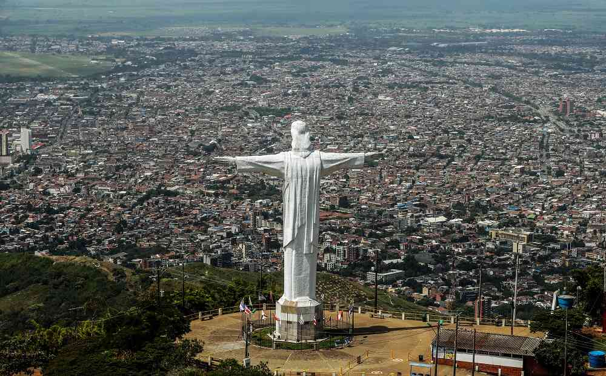
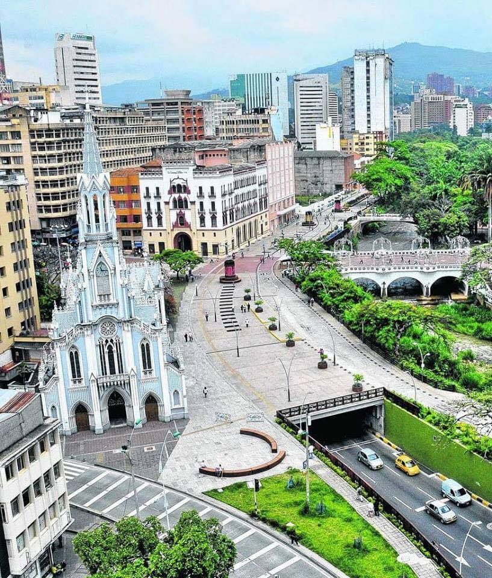
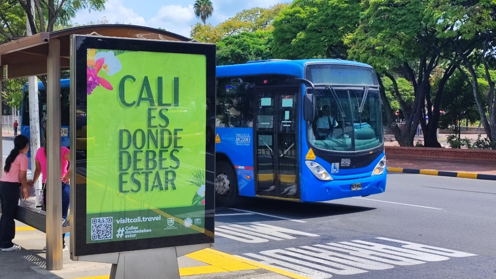

Cali

Cali, una de las ciudades más importantes del suroccidente colombiano, se destaca por su riqueza cultural, su tradición musical y su importancia en el ámbito deportivo. En términos económicos, la ciudad ha fortalecido sectores como la industria, el comercio y el turismo, contribuyendo al crecimiento regional. Además, su ubicación estratégica la convierte en un punto clave para el comercio nacional e internacional. Sin embargo, Cali enfrenta una situación compleja en materia de seguridad. El aumento de la violencia y los conflictos entre grupos criminales ha generado preocupación entre los ciudadanos y las autoridades. Como respuesta, se han implementado medidas para mejorar la seguridad y fortalecer la presencia institucional en las zonas más afectadas. A pesar de estos desafíos, Cali continúa avanzando en proyectos de infraestructura, cultura y desarrollo social, buscando mejorar la calidad de vida de sus habitantes.
Cali es una ciudad clave del suroccidente colombiano, reconocida por su cultura, música y deporte.
Economía
Su economía se basa en:

- Industria
- Comercio
- Agricultura cercana
- Turismo
Infraestructura
Se han desarrollado proyectos en:

- Transporte
- Espacios públicos
- Desarrollo urbano